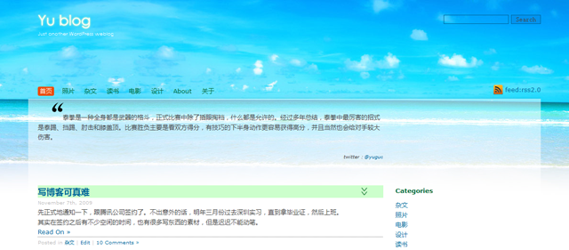
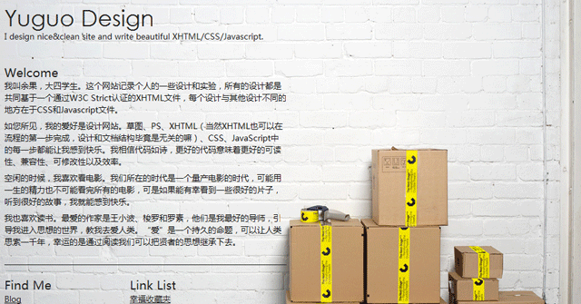
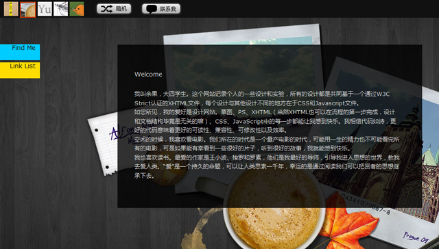
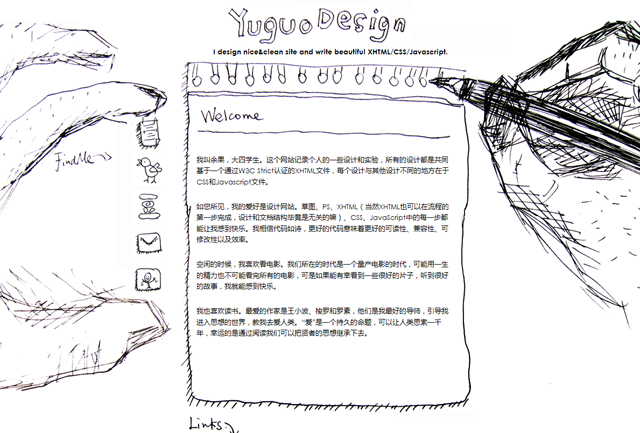
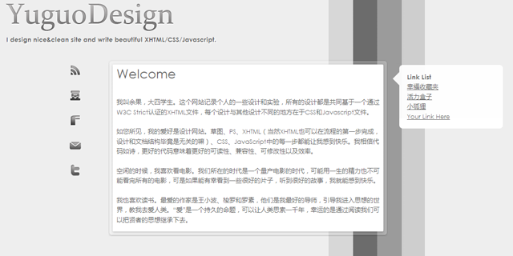
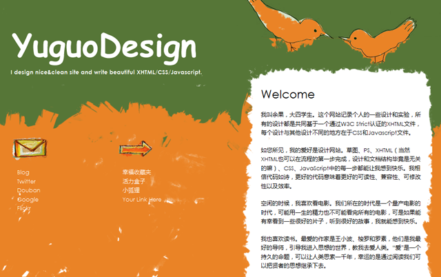
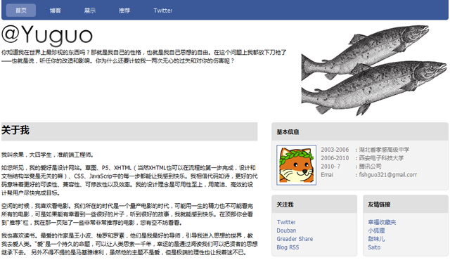
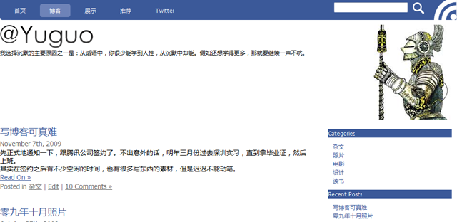
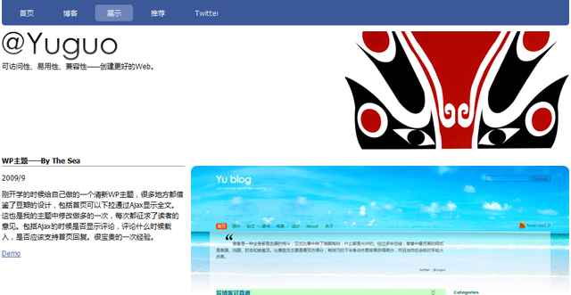

WP主题——By The Sea
2009/9
刚开学的时候给自己做的一个清新WP主题，很多地方都借鉴了豆瓣的设计，包括首页可以下拉通过Ajax显示全文。这也是我的主题中修改做多的一次，每次都征求了读者的意见。包括Ajax的时候是否显示评论，评论什么时候载入，是否应该支持首页回复。很宝贵的一次经验。

求职主题系列
2009/10
因为09年10月正值校园招聘高峰期，所以做了一组作品然后在网上投 简历。这组主题调用不同的js和css文件，同时共享一份相同的xhtml。无论是从美工还是代码来看都是非常粗糙的作品，但因为这个系列作品获得了ivane老师的推荐，十分庆幸。





WP主题——Simple Yu
2009/11
这是11月份找到工作之后给博客做的一个重建，并且这次重建牵涉到主页、展示、推荐和Twitter，用了相似的风格。这个设计用了渐进增强的思想，对于IE6用户也是比较友好的。另外基本没有用图片，都是CSS属性——其中包含一些CSS3属性和只有FF、Chrome和Safari支持的CSS属性。
这个主题做得比较随性，因为没有什么考核的意思在里面，所以整体的考虑没有展示技术，只有展示可读性。


